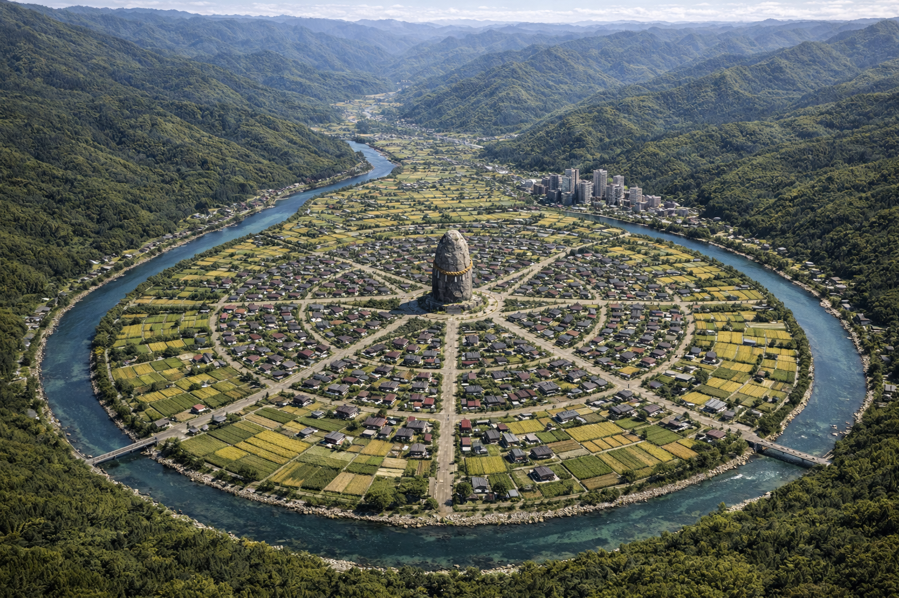

暮らしの近くに、行政の窓口を。
人口約2万8千人（結界内の人類系種族）。神聖森林と浄化清流に囲まれた完全守護都市「山奥市」。
目的別メニュー
※「歌志内市のような入口の多いトップ」を意識した構成です。
新着情報
2022年2月22日｜交通
市営バス ダイヤ加工ならびに改正のお知らせ
2000年1月9日｜募集
【募集】壊滅的被害に伴い市職員を募集します
1946年8月18日｜市政
パブリックコメント（接続世界変更に関する是非について）実施のお知らせ